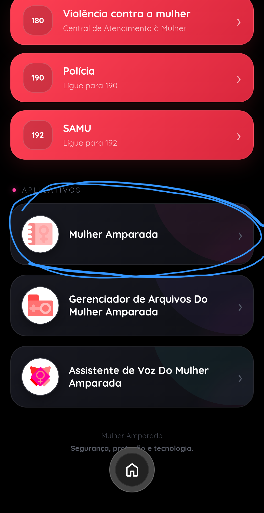
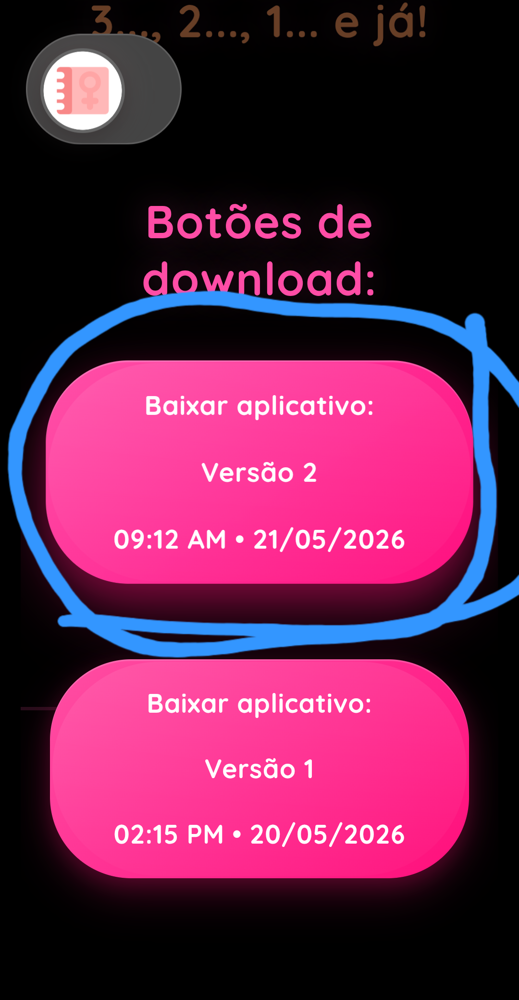
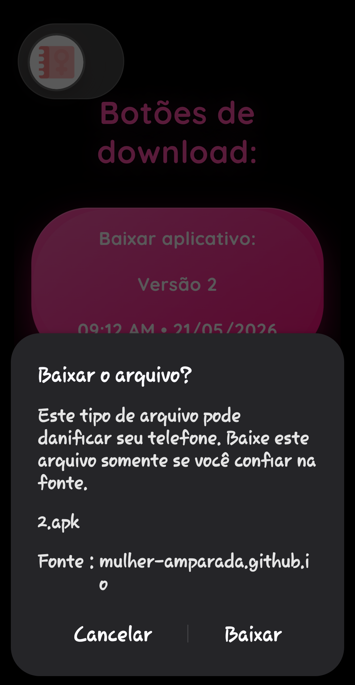
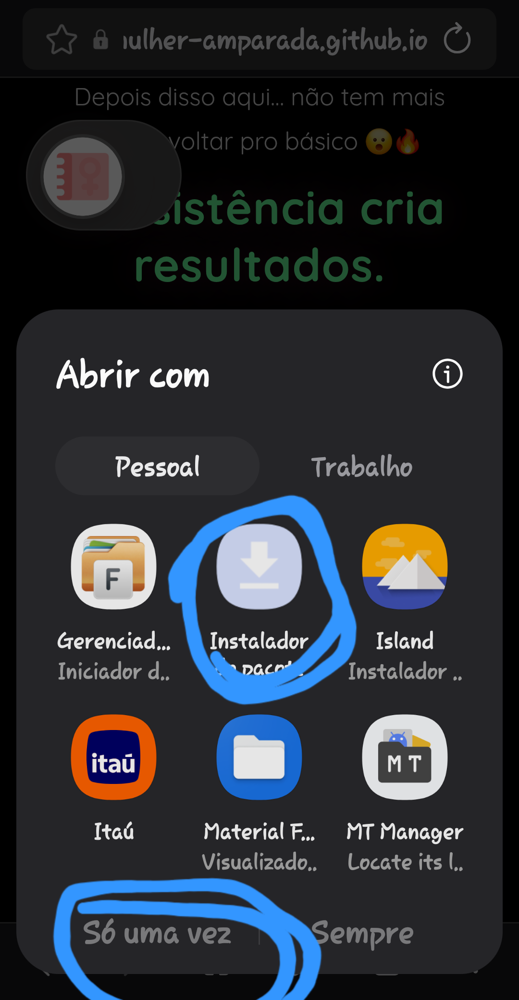
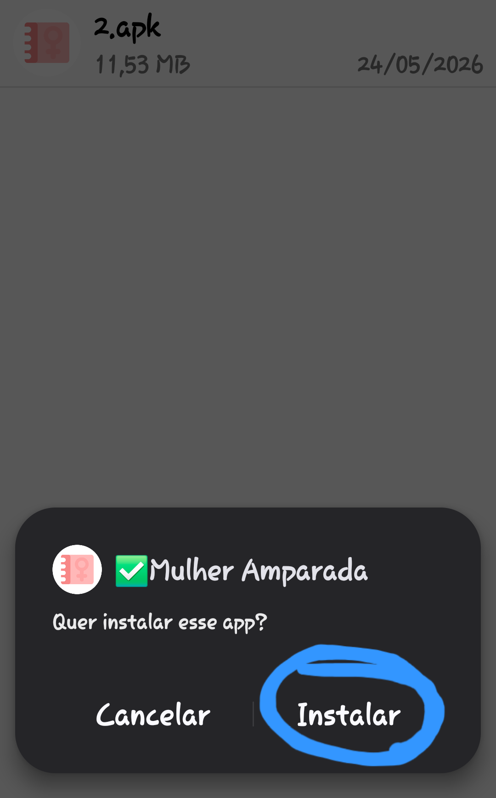
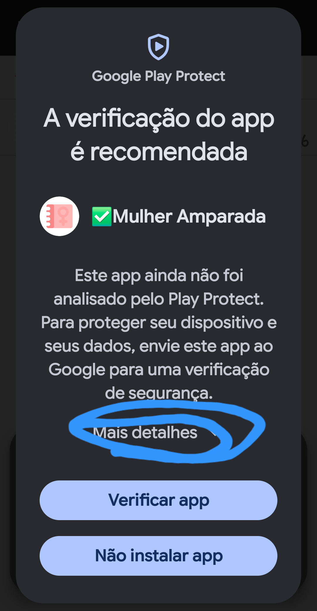
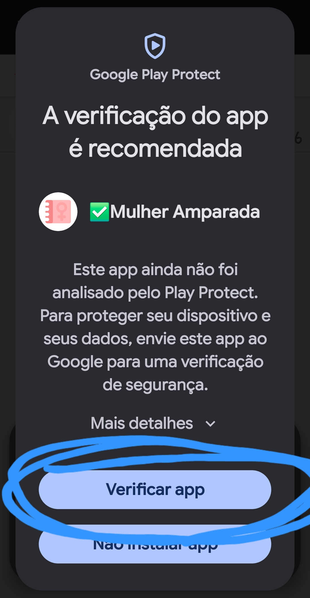
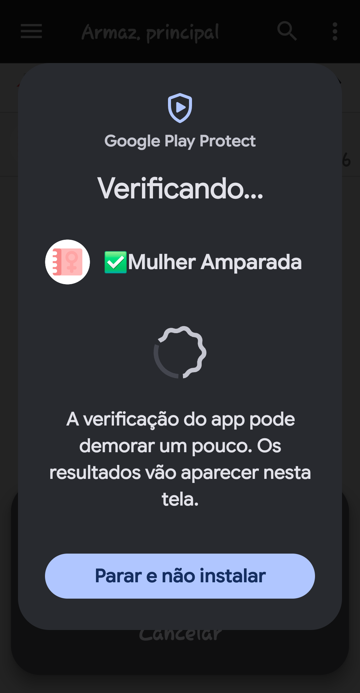
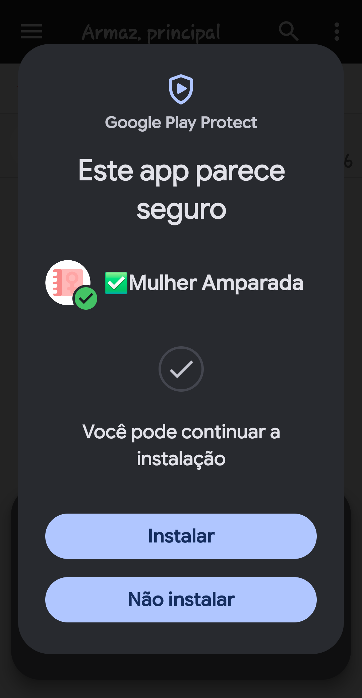

Toque no botão indicado, leia os termos com atenção e aceite apenas se estiver de acordo. Depois disso, role a página para baixo. Você encontrará esta seção:
Escolha a versão que preferir. A versão recomendada normalmente oferece mais estabilidade e compatibilidade. Em seguida, toque no botão de download.
O Android pode exibir um aviso informando que aplicativos baixados fora da loja oficial podem representar riscos. Isso acontece porque o arquivo não foi instalado pela loja oficial do dispositivo. Instale apenas se você confiar totalmente na origem do aplicativo. Durante a instalação, o sistema pode solicitar autorização para instalar aplicativos do navegador ou permitir “fontes desconhecidas”. Essa opção existe para instalações manuais de arquivos APK. Se decidir continuar, siga as instruções exibidas pelo Android. Depois disso, poderá aparecer esta tela:
Siga os passos mostrados na imagem. Em seguida, outra confirmação pode aparecer:
Também é normal que o Google Play Protect exiba um aviso de segurança. Você pode revisar as informações do aplicativo antes de decidir instalar. Exemplo:



Leia todos os avisos com atenção e continue apenas se confiar no aplicativo e compreender os riscos envolvidos.